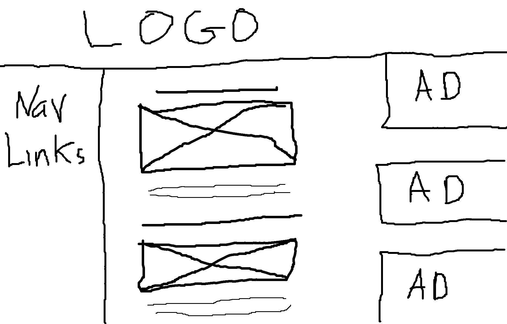
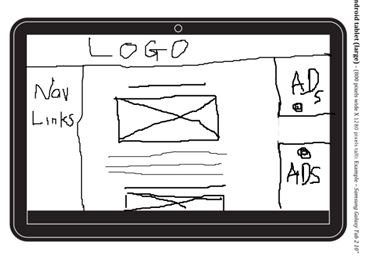
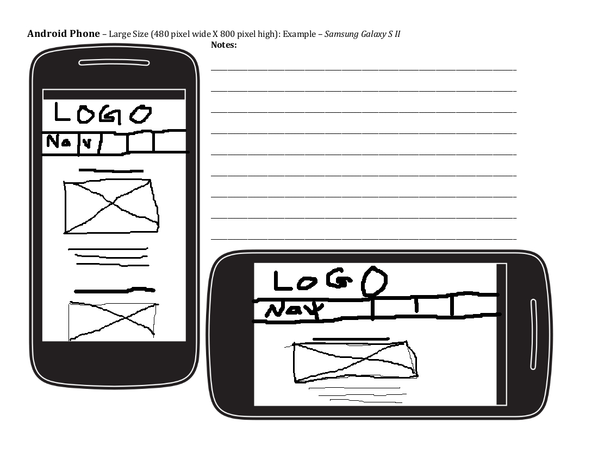

Purpose
For my project, I want to create a site that has dragon craft projects. There will be different pages for different levels of difficulty. One page will be for kid crafts, there will be about five project ideas. The page will show an image of the completed project, short description, and a link that takes the user to the full instruction website. The full instruction will be someone else’s webpage. This project will be good for people who like dragons and want to find a website that has good ideas without having to search the entire web. The projects are other people’s so the link will take the user to their websites.
Audience
The audience is more targeted to people who love dragons. More specifically for stay at home-mothers that need ideas to keep their children happy. The age group will be diverse most likely in the range of 16-35. It can be male or female, but I presume that it will be mostly female. Many kids like to play pretend, what better way than with a dragon that they have created. They could play knights and dragons. I know that I love dragons, but struggle to find good projects that are fun and challenging. There are many dragon lovers out there, and many would love to be able to make their own dragon, but do not know how. Children will be using their imaginations; studies have shown that children that use their imaginations do better in school.
Persona: Stay at home mom
Fictional name: Susan Homes
Job Title/responsibilities: Mom, taking care of three children ages three, five, and seven
Demographics: Age 35, has three children, has an associates in child education
Goals and tasks: Maintaining a clean home and keeping her children happy
Environment: Stays at home and takes care of her kids. She is good on the computer, but doesn’t have a lot of time to be on the computer.
Quote: “Let’s find a fun craft to do.”
Wireframes
Browser
Tablet
Phone
Data content
The home page will have the video. The JSON data is on the teenage and adult page will be the clay recipe button.